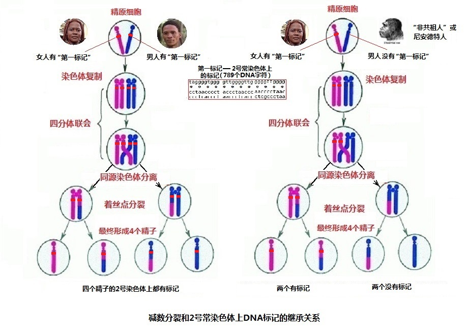

|
回主页
第六节 DNA 解码的钥匙：P公式（DNA骰子理论）
20多年来，分子人类学从线粒体DNA原始序列分析中，论证出现代人共同的老老祖母线粒体夏娃；从Y染色体的ZFY基因的729个DNA编码，确定了现代人共同的老老祖父Y染色体亚当。同时，还依据突变遗传标记，描绘了人类父系和母系的迁徙历史。
在人类的DNA序列中，更多的是常染色体中包含的DNA序列。而且，男女的常染色体没有区别。那么，在人类的22条常染色体上有没有标记呢？经过我们的研究，发现在常染色体上有这样的标记。不但有，而且很多。你在本网的“附：基因银行的DNA编码资料”中，可以看到9组这样的DNA编码序列标记。其中有6组标记都是自人类产生以来，DNA编码完全没有改变过的“固有标记”；其它3组编码虽然有着极少的差异，但总体序列是一致的，仍然可以看作“固有标记”。它们充分证实了现代人都是科学亚当和科学夏娃的后裔。
为了从DNA标记序列，去衡量人类同源（这里的“源”是指最早的那位“现代人的祖先”，他是23对染色体的人，而非进化论所说的“类人猿”）可能性的大小，我们引入了概率理论，并创建了P公式（DNA骰子理论）。它能够成为一把用于DNA序列解码的钥匙。
一．常染色体上标记的重要意义
有人说：Y染色体亚当和线粒体夏娃，“他们只是幸运的男人和女人”，“当时肯定同时生活着许多女人和许多男人，只不过她们的线粒体基因和他们的Y染色体基因没有遗传到现在而已。但是她们或他们遗传下了其他的基因。”
这是分子人类学面临的一个重要问题：当时是否进化出了许多人，只有他们留下了后代呢？
“他们留下了其它基因”的说法，是指如果一对夫妇只有女儿，没有儿子，那么，父亲的Y染色体的继承就消失了。如果没有女儿，母亲线粒体的继承就消失了。但是他们两人的常染色体都被儿子或女儿继承了，因此，常染色体上必然有来自父母的DNA证据。
对于这样的疑问，我们可以归结为两个问题：
1. “那些”和Y染色体亚当、线粒体夏娃同时生活的人，是否有同样的Y染色体亚当标记和线粒体DNA的夏娃标记？
如果他们“有同样的Y染色体亚当标记和线粒体DNA夏娃标记”，回答就很简单了：可以肯定当时有很多这样的人，那是他们的兄弟、姐妹或者他们的堂兄弟、姐妹。我们可以将他们称作“共祖人”。就像现在全世界的人，都有线粒体DNA夏娃标记，男人还都有Y染色体亚当标记，但是却都是来自二十多万年前“共同祖先”（“科学亚当”、“科学夏娃”）的后裔。
2. 如果和前面的答案相反：认为那些和Y染色体亚当、线粒体夏娃同时生活的人，他们有各自的Y染色体标记和线粒体DNA标记。为了讨论方便，我们将他们称作“不是与Y染色体亚当、线粒体夏娃有共同祖先的人”，简称“非共祖人”。只是由于他们可能在后代的遗传中，因为没有男性后代，或没有女性后代，他们的Y染色体标记和线粒体DNA标记没有遗传下来。
从人类生殖的“减数分裂”过程可以看到（见下面的内容），只要有“非共祖人”参与了人类的繁衍，在常染色体上必然留下他们的DNA序列标记（这就是“她们或他们遗传下了其他的基因”）。与此同时，会产生一部分现代人（掺杂了“非共祖人”的DNA序列的人群）的常染色体缺少“大多数人共有的标记”。
因此，在这里，唯一可以化解这个争论的是：必须找到在常染色体上的标记、并能证明全世界的人都有这个标记，没有任何特例。如果这一点得到证明，那么，就确定了现代人类的血统是纯净的，没有一点杂质。这就是常染色体上标记的重要意义。
二．人类DNA中的“第一个标记”
1. “第一个标记”是鉴定人类血缘关系的标记
常染色体上有这样的一个标记吗？答案是肯定的！类似于“Y染色体亚当标记”（729个DNA字符），它有789个字符，就位于2号染色体的2q13至2q14.1（2号染色体的长臂13区到14.1区）的位置上。我们可以称它为“人类DNA的第一个标记”（简称“第一标记”）。
如果在全世界人的常染色体上，所有人都有同样的“第一个标记”，没有发现“没有这个标记”的男人和女人，那么，无论这些“非共祖人”是否存在过，他们和现代的全世界人都毫无血缘关系。因为在我们的血液中，没有任何他们的成分。例如：爪哇人、北京猿人、尼安德特人等等，他们虽然存在过，但是，他们不是现代人的祖先，他们只是一些和我们毫无关系的类人猿 。
2.人类2号染色体是古猿两条染色体融合而成的吗？
当人类的DNA被认识以后，不少人总希望从DNA上去证实进化论的正确。凡是有一点支持进化论的见解，即便不是真实的，也会被重视，被发表。但如果是相反的研究结果，必然会被封杀，因为生物学界是进化论统治的世界。
人类2号染色体“是人和黑猩猩共有的猿类祖先的12号（或称2A）和13号（或称2B）染色体的融合”，似乎已经成为脍炙人口的事实，不少研究报告和书本上都加以引用。质疑这个结论的研究结果，几乎看不到。著名的分子医学专家考林斯先生有一本书：“上帝的语言”，特别推崇这个不真实的结论，其书影响很大，我们必须予以重视。从下面的剖析可以看到，这完全是一个没有根据的想象。
3.一段倍受重视的“789个碱基字符的序列”：
这个“融合想象”的“融合区”是一段789个碱基字符的序列。“上帝的语言”一书引用了2005年的2号染色体的报告，说人类2号染色体“必定发生了融合”（where
this proposed chromosomal fusion must have happened.），并且说：“这正是我们从猿进化到人时，在此处留下的DNA印记（DNA imprint）”(The fusion that
occurred as we evolved from the apes has left its DNA imprint)（英文版 P138）。
2号染色体的研究报告说:“在染色体方面，过去曾经描述过，在2q13–2q14.1位置上，有围绕着祖先染色体融合的区域。” On
chromosome 2, the local region surrounding the ancestral chromosomal
Fusion site on 2q13–2q14.1 had previously been described [注释2]。
而这个“过去曾经描述过”的报告，是2002年发表的“祖先染色体融合部位2q13–2q14.1的结构和演化”（“Genomic Structure and Evolution of the Ancestral hromosome Fusion Site in 2q13–2q14.1
and Paralogous Regions on Other Human Chromosomes”）研究报告[注释3]，在这个2002年的报告中又牵涉到另外两个报告[注释4、5]。
这4个报告相互引用，看来很复杂，其实十分简单：就是2号染色体的2q13–2q14.1位置上的789个碱基字符的序列中，里面包含有几个“TTAGGG”字符串的重复。他们说：“这可能表明是两个染色体头对头的融合区”。因为“TTAGGG”字符串，是染色体两端的“端粒”特有的、重复很多次的字符串。（见图6-1）。
4.“789个碱基字符的序列”可以作为一个标记
这里，我们先不讨论这段DNA编码是否就证明是两个染色体的融合，只是看一看这789个编码是否能看为标记？这里应该感谢美国国家生物技术信息中心（The
National Center for Biotechnology Information --NCBI），它免费提供了人类基因组的完整信息。本节有关的DNA编码序列，都是作者在该中心的网站上直接取得的。

图6-1 常染色体上的标记（人类DNA的“第一个标记”）
作为DNA标记，必须有它的明确性、固定性和保持遗传的特性。在前面的“祖先染色体融合部位2q13–2q14.1的结构和演化”报告中[注释3]，对这三个方面，都加以了肯定。
（1）首先，该报告指出了编码所在的区域：RP11-395L14 (AL078621)，包含的789个碱基对字符；
（2）同时，指出这个染色体的融合是人类特有的，并且是被固定了的；
（3）它产生在人类和黑猩猩分离之后，现代人向全世界传播之前。
报告说：
“因为融合染色体是人类特有的，而且是固定的，融合必定发生在人类和黑猩猩已经分离之后，但是在现代人类传播到世界各地之前。”
（“Because the fused chromosome is unique to humans and is
fixed, the fusion must have occurred after the human–chimpanzee split, but before
modern humans spread around the world” 。（原文））。
这里面包含的意思是：由于两个染色体的融合，由24对染色体的猿，产生出了23对染色体的人，使他们与黑猩猩的祖先分离，一直延续到全部的现代人。而这789个DNA码，就是这一过程的证据，它一直保存到现在。
显然，这789个DNA字符的编码可以作为一个标记（“上帝的语言”书中，说“DNA
imprint”）。我们可以将常染色体上的这个标记，称作“常染色体标记”或人类DNA上的“第一标记”。因为它是认识人类源头的最重要标记，所以命名它为“第一标记”。
5. “第一标记”既可以通过父系继承，也可以通过母系继承
这个“第一标记”位于人类的2号常染色体上。常染色体和Y染色体、线粒体不同之处，在于人的一对（两条）2号常染色体，一条来自父亲，一条来自母亲。因此，2号常染色体的这个“第一标记”，既是父系的标记，也是母系的标记。既可以通过父系继承，也可以通过母系继承。如果只有一方有这个标记，另一方没有这个标记，将在不断的生育繁衍过程中，逐渐形成一些在2号染色体上，没有“第一标记”、或者仅仅一条染色体上有“第一标记”的群体。
要说明这个问题，就牵涉到了人类的生育繁衍过程，让我们复习一些高中生物学上的有关内容。
三．减数分裂和“第一标记”的承传
1．减数分裂和胚胎的形成
讲到常染色体和常染色体的遗传，就一定要涉及减数分裂和胚胎的形成。这里，仅仅介绍父系精子产生的减数分裂过程，并由此说明“第一标记”的承传。这些只是现在高中学生生物课程的内容。
当男人性成熟后，睾丸里的一部分精原细胞就开始进行减数分裂，经过减数分裂以后，精原细胞就形成了成熟的生殖细胞——精子，其具体过程如下。
精原细胞中有22对常染色体，一对性染色体。每一对（两条）常染色体，一条来自父亲，一条来自母亲。

图6-2
：2号常染色体上“第一标记”的承传
来自父方和来自母方相同编号的两条染色体，叫做同源染色体。在减数分裂中的第一时期，两条染色体分别自我复制。复制后，由于每条染色体都含有两条姐妹染色单体，因此共含有四条染色单体，叫做四分体（4个DNA分子）。
然后，进入四分体联会的过程。四分体中的非姐妹染色单体之间（来自父亲和母亲的常染色体之间）发生了DNA的片断交换，从而导致了父母基因的互换，产生了基因重组。每条染色体上的基因所包含的DNA编码数量，仅仅占该条染色体DNA编码总量的3%以下，因此基因重组并不会引起染色体结构大的改变。
然后发生第一次减数分裂，实现同源染色体的分离，形成两个次级精母细胞。进而发生第二次减数分裂，每个次级精母细胞的两条相联姊妹染色体着丝点分裂，形成4个单体，最终发育成4个精子。卵子的减数分裂情况与精子类似。
在图6-2 左侧中，男人和女人的2号常染色体的长臂2q13-2q14.1上，都有“第一标记” 。经过减数分裂后，产生的4个精子上，同样保持了这个标记。由他们受孕产生的胚胎细胞中，来自父系的2号染色体，就存在着这个标记。如果卵子也是同样的情况，那么，胚胎细胞中，来自母系的2号染色体，也同样存在着这个标记。这个胚胎细胞发育出来的男人或女人，就是现在全世界普普通通的成员。
在图6-2 右侧中，女人的2号常染色体上，有“第一标记””。而男人2号常染色体上，没有这个标记。经过减数分裂后，产生的4个精子上，有两个保持了这个标记，另外两个没有“第一标记”。
由没有“第一标记”的精子受孕产生的胚胎细胞，即使卵子的2号染色体是有标记的，胚胎细胞所含的两条2号染色体，其2号染色体父系的那一条，就一定没有这样的标记。这个胚胎细胞发育成人后，他（或她）不再是一个普通的人。他（或她）的男性后裔和女性后裔，有50%的人和他（或她）一样，有一条2号染色体没有“第一标记”。 经过一代代的承传，就会有一群没有“第一标记”的群体。
图6-2右侧的图，如果将男性换成有“第一标记”，女性换成没有“第一标记”，其结论仍然是一样的。
如果男性和女性的2号染色体上都没有这个标记，他们相婚配，那他们子女的2号染色体上，就都没有“第一标记”。
2. 线粒体DNA和“第一标记”的承传关系
有人说：有些存在过的女性，因为她们中间的后裔没有女性继承人，所以，她们的线粒体没有遗传到现在，这个说法有它的合理性。但是，当有了“第一标记”之后，我们可以说，这些“存在过的女性”，一定不包含“非共祖人”的女性（即没有“第一标记”的女性）。
假如和线粒体夏娃同时生活在一起的女人中，有一个是“非共祖”的女人，她的身上没有“第一标记”。由于常染色体DNA的遗传，虽然她的线粒体DNA没有遗传下来，她的常染色体却遗传下来了。
总之，只要过去存在没有“第一标记”的女子，如果她们（或她们的后裔）又和线粒体夏娃的后裔有过交配，必然现在会存在没有第一标记的人群。在世界上检测的所有DNA样本中，从来没有发现什么人身上的2号染色体不存在这个标记，因此，也就可以断定，从来就不存在这些“非共祖”的女人。
对于Y染色体亚当，也可以用同样的道理推之。
由此看到，在人类延繁的历史长河中，只要极少数的“非共祖人”，或者“尼安德特人”等猿人的血统加入，无论他们是男是女，
都会发展出2号染色体上没有“第一标记”的人群。然而，至今从来没有发现过这样的人群。对于现代人血统是否纯正，答案已经十分清楚。
四．唯一的一对父母
面对人类的DNA编码，无论什么人持什么看法，编码显示的事实是无法改变的。从“第一标记”所看到的事实，就是全世界的现代人来自一对父母，而且是“唯一的一对父母”。这“唯一的一对父母”在他们产生之时，都有了这个标记。
如果抛弃“2号染色体是否由两个染色体融合而来”的看法，承认2号常染色体上这789个编码是一个标记，它标志全世界的现代人来自唯一的一对父母，在这一点上，本书的观点和“上帝的语言”一书的观点是一致的。该书的作者考林斯先生不也说：“正是在此处的DNA上留下了印记”（left its DNA imprint）（“上帝的语言”中文版，第94页，英文版 P138）吗？他还说：“因此，通过DNA分析表明，我们人类确实都是出于一个家族。” （“上帝的语言”中文版，第86页），这显然也是与“唯一的一对父母”极为相似的表达。的确，仅仅有这个“第一标记”，就已经充分说明了全世界的人们，来自“唯一的一对父母”。何况，还有亚当标记和线粒体夏娃标记为佐证。
如果不承认这是个标记，由“染色体融合”使24对染色体变成23对染色体的结论就不存在，“人和黑猩猩共祖”的假定也没有基础，从进化论或骤变论上，就更加无法解释人的来源了。
承认这个标记，就承认了“唯一的一对父母”，但是，并不意味着必须承认“染色体融合”的假定。23对染色体的人类产生，也许有着我们无法看到的方式。
五．1092个人的DNA报告，男人和女人
全世界人的2号常染色体上“第一标记”的789个DNA字符，是否都是相同的呢？这就涉及到人类的常染色体有多大的差别，最近有两篇研究报告给出了依据。
2001年2月16日，“科学”期刊报道了科学家们完成了人类基因组测序工作，不过所用DNA样本仅来自5个人[注释6]。他们是两男三女，一个非裔美国人、一个中国人、一个西班牙裔的墨西哥人、以及两个高加索人（白种人）。其中，包含了主持基因组测序工作的首席科学家克雷格·文特尔（Dr.
John Craig Venter）本人DNA的样本。
2012年10月31日，“自然”期刊报道科学家们完成了更多人类DNA的测序，所用DNA样本取自1092人，这个报告的名称是“来自1092个人类基因组的遗传变异综合图谱” [注释7]。这是英、美、中等多国科研机构联合发起的一个研究计划，最终目标是获得世界各地不同人群中2500人的基因组数据。本阶段逾千名的基因提供者来自欧洲、美洲、亚洲、非洲的１４个国家和地区，男性和女性的比例大致是各占一半。
2013年元月，又有一个报告“东南亚100个马来人的基因组深度测序”，在美国人类遗传学学会网站上发表 [注释8]。
这两个报告的结论都是：每个人常染色体的DNA突变（多态性SNP）平均数是3.6M（3.6百万）个碱基码，这大约占22条常染色体DNA总数的千分之1.2（每833个位点上，有一个点的差异）。由于人们的DNA突变，很多都是继承祖先的突变，因此，不同的人包含了很多相同的突变。除去相同的DNA突变，人们之间常染色体DNA突变的差异要远小于千分之一。
按照这两个研究结果，我们可以评估“第一标记”的789个DNA字符，在不同人身上的差异不应该多于一个字符。自现代人的出现到现在，大约有20几万年了。上万代的繁衍，每代人身上几十代的细胞分裂拷贝，在全世界70亿人身上的这789个DNA字符，居然能够一字不差，这真令人惊叹！
因此，可以肯定地说，人类的“第一标记”，是全世界人来自“唯一一对父母”的铁证。在这个结论的面前，“群体进化和选择”的进化论理论，已经没有资格作为讨论的对手，因为不可能仅仅进化出“一对父母”。至于是否由染色体融合“骤变”来产生这一对父母，在下面的两节中，还要仔细讨论。
这两个报告另一个值得关注的是，他们采集的DNA样本是男、女大约各半，没有发现男人和女人常染色体的DNA有什么区别。女人和男人有相同的常染色体，仅仅少了一个Y染色体，多了一个X染色体，就和男人有那么大差别，奥秘在哪里呢？另外，为什么在首个女人的2号染色体上，会有和男人相同的“第一标记”？这不能不让我们有更多的思考和追寻。
从DNA解码出发，开启对我们自身的认识，仅仅是个开始。一百年多以前的达尔文，自以为掌握了人类的秘密，作出了关于人的来源和进化的种种结论，如果他能活到现在，一定也会发出巨大的感叹。
|